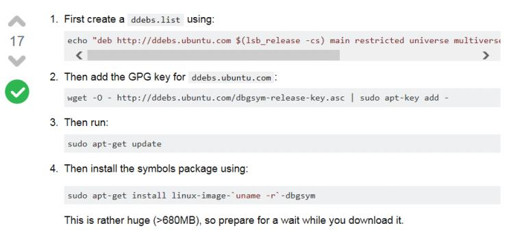
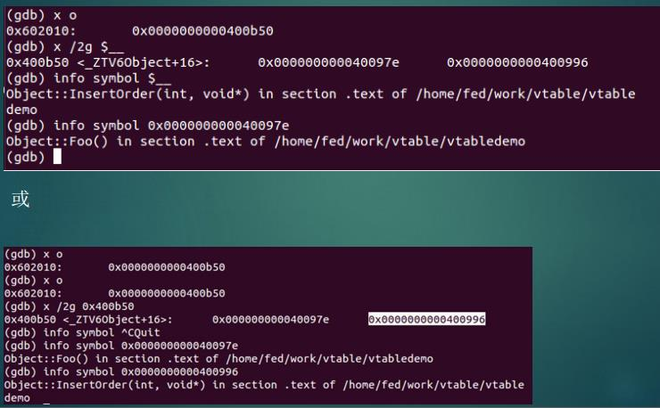
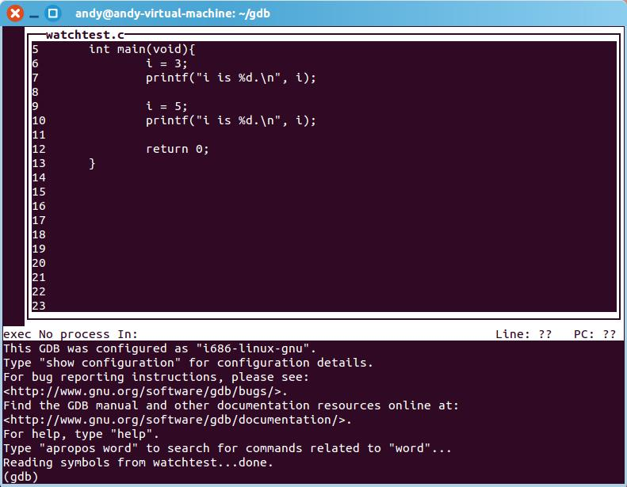
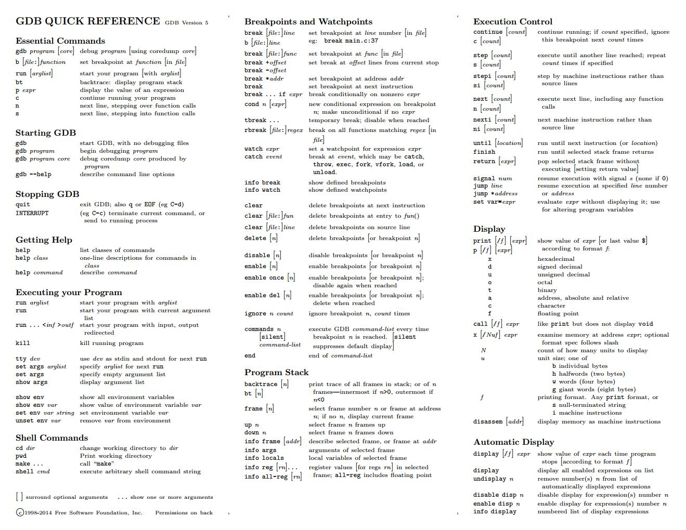
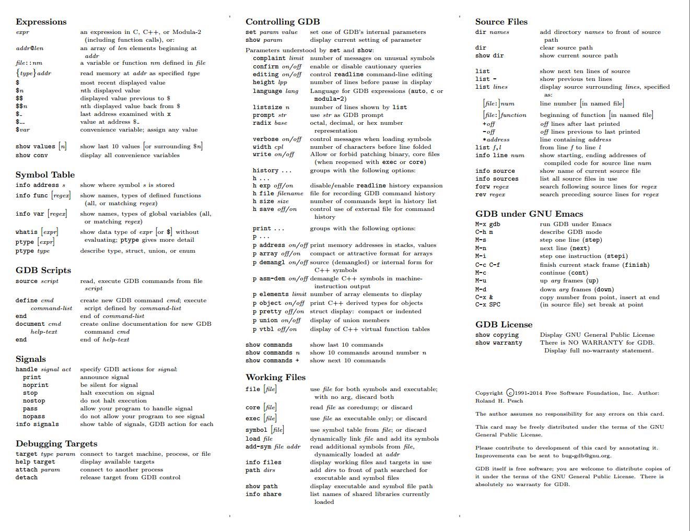

GDB常用命令
GDB为Unix类系统中默认的C\C++调试器，很多其他的调试器都是基于GDB开发，比如CGDB，DDD，以及Eclipse也是封装GDB来进行C/C++调试。学习完GDB后，其他封装了GDB的调试器用起来也就游刃有余了！
GDB的命令在一行内输入，并没有限制命令行的长度。对于记不住的命令，输入一部分可以使用TAB键补充完整命令，类似Shell的功能。
GDB与Windows上的调试器做区别与对比，对程序进行调试也有两种方法联系到程序，一种就是直接用GDB启动程序，另外一种方法就是挂到已经运行的程序中。
$ gdb test
GNU gdb (Ubuntu 7.7.1-0ubuntu5~14.04.2) 7.7.1
Copyright (C) 2014 Free Software Foundation, Inc.
License GPLv3+: GNU GPL version 3 or later <http://gnu.org/licenses/gpl.html>
This is free software: you are free to change and redistribute it.
There is NO WARRANTY, to the extent permitted by law. Type "show copying"
and "show warranty" for details.
This GDB was configured as "i686-linux-gnu".
Type "show configuration" for configuration details.
For bug reporting instructions, please see:
<http://www.gnu.org/software/gdb/bugs/>.
Find the GDB manual and other documentation resources online at:
<http://www.gnu.org/software/gdb/documentation/>.
For help, type "help".
Type "apropos word" to search for commands related to "word".
Reading symbols from test...done.
(gdb)
$ gdb -q
(gdb)
(gdb) attach 1290
Attaching to process 1290
Reading symbols from /usr/bin/vim.basic...(no debugging symbols found)...done.
......
(gdb)
另外一种指定调试程序的命令是file，如下：
$ gdb
GNU gdb (Ubuntu 7.7.1-0ubuntu5~14.04.2) 7.7.1
Copyright (C) 2014 Free Software Foundation, Inc.
......
(gdb) file test
(gdb) run 1 2 3 // run [args]
另外一种可以在启动gdb时就指定被调试程序和参数gdb --args gcc -O2 -c foo.c，用gdb调试gcc编译foo.c文件。
总结一下GDB启动程序或挂接程序有如下的几个方法：
$ gdb program
$ gdb program core // 使用core文件启动程序
$ gdb program 1234 // attach到进程1234，以program作为调试目标
$ gdb program ./1234 // GDB会首先将1234当作core文件名或PID，`./`则直接告诉GDB为文件
在启动GDB时有一些选项和参数可用，如下表所列举：
| 选项和参数 | 简写 | 含义 |
|---|---|---|
-symbols file |
-s file |
从file文件读入符号表 |
-exec file |
-e file |
用file作为可执行文件执行 |
-se file |
无 | 将file当作可执行程序，且从中读取符号 |
-core file |
-c file |
文件file为core dump文件 |
-pid number |
-p number |
挂接到pid为number的进程上 |
-command file |
-x file |
从文件file中执行GDB命令 |
-eval-command command |
-ex command |
执行GDB命令command，可以写多个-ex选项，指定多个命令 |
-directory directory |
-d directory |
添加目录directory到源码和脚本文件搜索路径 |
-readnow |
-r |
立刻加载所有符号，而非执行时加载 |
-nx/-n |
无 | 在GDB启动时不执行初始化文件里面的命令 |
-quiet/-silent |
-q |
安静模式，不打印介绍和版权信息 |
-nowindows |
-nw |
无窗口，以命令行接口运行 |
-cd directory |
无 | 用directory作为工作目录，非当前目录 |
-baud bps |
-b bps |
远程调试设置串口波特率 |
-l timeout |
无 | 远程调试的连接超时 |
-gui |
无 | 启动时激活文本用户几口，管理文本窗口 |
-q |
无 | 启动gdb时不显示版本信息 |
在GDB启动阶段，按照如下步骤初始化：
- 启动命令行解释器（如果GDB启动指定
-args，则阻止命令行选项处理） - 读入home目录下的初始化文件（如果有
.gdbinit文件），并执行所有命令 - 处理命令行选项和参数
- 读入和执行当前工作目录下的初始化文件（如果有
.gdbinit文件），只执行和home目录初始文件不同命令 - 读入命令文件，如果使用
-x选项指定了文件 - 读入记录在历史文件里的命令历史
如果要被调试进程的参数可以使用show args命令，同时要修改被调试进程的命令行参数可以使用set args [args]来进行修改
退出GDB
退出GDB可以输入quit/q命令，或者Ctrl-d快捷键。
下面依次总结一下GDB调试的基本命令。
执行程序
在启动程序后程序并没有执行起来，这时需要运行run命令将程序运行起来。从run命令中可以指定程序运行的参数。但是对于挂接进去的程序来说，程序已经执行起来，如果在此时执行run命令，那么会得到如下代码块的提示。
(gdb) run
The program being debugged has been started already.
Start it from the beginning? (y or n) n
因此run命令可以用于重新执行程序而不用退出gdb，这种方式比较好的地方是不退出GDB会保留之前在GDB中设置的断点的信息。
单步命令
next执行下一行，然后暂停，它相当于Wingdb的step over。next n表示单步执行n步，如果遇到函数则跳过。
step执行下一行，然后暂停，它相当于step in，即在遇到函数时进入函数内部。step n表示单步执行n步，遇到函数进入函数中。
正常情况下，step命令是不会进入不带调试信息的函数的。如果要进入不带调试信息的函数，比如libc中的函数，则需要进行调试器设置。
set step-mode on设置完单步模式后，GDB就不会跳过没有调试信息的函数了。这种情况适用于汇编。
恢复执行
如果程序执行后遇到断点就会停下来，想要再次运行，需要执行continue命令。
有条件的执行还有另外两个命令
until命令可以用于处理循环，想让程序执行到循环结束时暂停，可以使用until命令。另外达到同样的目的可以在循环结束位置设置断点，然后执行continue命令，这样也可以实现在循环结束时停下来。
finish命令用于执行程序到当前函数返回之后为止，其实从GDB角度看它是当栈顶函数帧完成时为止。
与finish类似的一个命令是return，与finish执行完当前函数剩下部分，正常返回不同。return命令则跳过当前函数余下的指令，直接返回。return val则可以指定函数返回值为val，这样可以实现即退出函数又修改函数返回值。
断点
这里断点泛指可以暂停程序的机制，其实包含断点，监视点以及捕获点。捕获点是当特定事件发生时暂停执行。
1. 断点
break命令用来设置断点，如下例子所示。
(gdb) b main
Breakpoint 1 at 0x8048426: file watchtest.c, line 6.
另外一个命令是start，它可以运行程序，并停在程序入口处，不需要设置断点。对于没有调试符号的无法定位到入口函数main，这个时候执行start命令也是无法断点在程序入口点。
可以使用readelf -h a.out命令定位入口地址，然后使用b *address直接在ELF入口点上设置断点。不过这里的入口点并不是由调试符号的main函数。
条件断点设置，可以在设置断点时添加条件，也可以使用condition命令为断点添加条件。
(gdb) break insert if num_y == 5
// condition添加条件
(gdb) break insert
(gdb) condition 1 num_y == 5
(gdb) info b
Num Type Disp Enb Address What
1 breakpoint keep y <MULTIPLE>
stop only if num_y == 5
break命令有如下几种设置断点的方法：
(gdb) break function // 在特定函数名字上设置断点
(gdb) break filename:function // 在特定源码文件中的function函数名上设置断点
(gdb) break line_number // 在特定的代码行上设置断点，line_number为行号
(gdb) break filename:line_number // 在特定的源码文件的指定代码行上设置断点，line_number为行号
(gdb) break +offset / break -offset // 当前栈帧中真该执行的源码行前或后偏移行数上设置断点
(gdb) break *address // 星号后面的address为设置断点的地址值
对于匿名空间中的函数可以使用如下形式设置断点，比如匿名空间中的bar函数：
(gdb) b (anonymous namespace)::bar
条件断点的基本语法是break break-args if (condition)，break-args用于指示设置断点的位置参数。除了前面使用到的变量比较条件i > 4外，还有其他的一些可以使用。
- 相等，逻辑和不相等运算符（
<,<=,==,!=,>,>=,&&,||等） - 按位和移位运算符（
&,|,^,>>,<<等） - 算术运算符（
+,-,*,/,%） - 程序中函数调用，比如
break 44 if strlen(mystring) == 0
tbreak和break命令类似，只是它是临时断点，有效期只到首次到达指定行/位置时为止。
ignore命令可以用于忽略断点。ignore bnum count可以用于忽略bnum断点count次。如果将count设置为0，则表示下一次遇到断点则生效，立即断下来。
2. 监视点
另外一类断点其实是监视点，它将断点和变量检查的功能相结合。即当指定的变量的值发生变化时暂停程序执行。
(gdb) watch i
Hardware watchpoint 2: i
(gdb) c
Hardware watchpoint 2: i
Old value = 0
New value = 5
main () at watchtest.c:10
10 printf("i is %d.\n", i);
类似地还可以使用条件表达式，比如(gdb) watch (i > 4)。在监视点中也可以使用非常复杂的表达式，比如(gdb) watch (i|j > 12) && i > 24 && strlen(name) > 6设置的监视点监控的条件很多，很复杂的表达式。
watch命令可以监视表达式，值变化时中断。表达式可以是简单的变量或者是复杂的表达式，由变量和运算符组成，如下。
watch a*b + c/d // 监视表达式`a*b + c/d`的值
watch *(int*)0x12345678 // 以`int*`类型监视地址`0x12345678`处的值变化
watch *global_ptr //
监视点的实现依赖于系统，它既可以用软件实现也可以用硬件实现。GDB实现软件监视点是通过单步软件，并在每次暂停时检查变量值，这使得监视点设置之后的执行效率比正常执行慢几百倍。一些系统，如PowerPC和X86-CPU的机器，GDB可以支持硬件监视点，硬件断点不会降低程序执行效率。
rwatch命令可以监控表达式值被读的点，awatch则可以监控表达式被读或写的点。
rwatch [-l|-location] expr [thread thread-id] [mask maskvalue]
awatch [-l|-location] expr [thread thread-id] [mask maskvalue]
这种报告都是事后报告，即读写动作发生后，在下一条指令时才能暂停下来。其中的thread参数可以限制到指定线程上，也就是指定线程触发了读写动作时才会断下来。这个参数只对硬件实现的监视点才有效，软件实现监视点无效。
3. 捕获点
捕获点捕获的是进程中的一些特定系统API调用，比如fork，vfork，exec类函数等，还有就是系统调用。系统调用的捕获点设置可以使用catch syscall [name | number]，name表示系统调用函数名，number表示系统调用号。
(gdb) catch fork // 发生fork调用，创建进程时即暂停
(gdb) catch syscall mmap // 设置系统调用 mmap的捕获点。
Catchpoint 1 (syscall 'mmap' [9])
4. 其他命令
info breakpoint/ info b / i b用于列举当前调试中插入的断点的信息。
delete命令用于删除断点。delete命令后面跟的数字是断点的编号，即通过info breakpoint命令列出的断点列表前面的编号。如果没有任何参数的delete命令会删除所有的断点。
(dbg) delete 1
clear命令用于清除断点，它的使用方法与break类似，可以指定行数，函数名以及文件名加行数或文件名等形式。
disable/enable命令用开启或关闭断点，如果不想让某个断点生效，可以设置它为disable。enable命令有一个once参数表示此次使能断点只有一次，当断点断下来一次之后变为disable状态。
(gdb) disable 1
(gdb) enable 2 3
(gdb) enable once 2 3
在Windbg中有一个x命令，可以列举模块的函数信息，比如x ntdll!NtCreate*则列举出ntdll模块中所有以NtCreate开始的函数。在GDB中也有类似功能，即info functions，不带参数使用它会列出处所有的函数。
info functions regex则会列出满足regex正则表达式的函数名称，比如：
(gdb) info functions thre*
All functions matching regular expression "thre*":
File a.c:
void *thread_func(void *);
Non-debugging symbols:
0x0805082c pthread_create@plt
查看变量
print命令可以用来查看变量值，可以是局部变量，全局变量，数组元素或C的结构体，C++成员变量等。
(gdb) print i // int类型变量 i
$2 = 3
(gdb) print &i // 打印变量i的地址
$3 = (int *) 0x8047a54
对于结构体指针，可以使用print *tmp来打印结构体内容。
disp *tmp是另外一种显示变量的方式，每当遇到断点暂停时就会执行display命令显示结构体内容。
disable disp 1关闭显示列表中1号的显示，enable disp 1开启显示。undisplay 1可以删除显示命令。
还有一种方式可以显示结构体或类对象数据，就是GDB的commands命令，它可以形成一个命令集合指定在某次断点执行。
(gdb) b 37
(gdb) commands 1
Type commands for when breakpoint 1 is hit, one per line
End with a line saying just "end"
>p temp->val
>if(temp->left != 0)
>p temp->left->val
>else
>printf "%s\n", "none"
>end
>if(temp->right != 0)
>p temp->right->val
>else
>printf "%s\n", "none"
>end
>end
最后一种方法是使用GDB的call命令，GDB中可以调用程序中已经编译的函数，用程序已有的函数输出变量的值。
(gdb) commands 2
Type commands for when breakpoint 1 is hit, one per line
End with a line saying just "end"
>printf "**************current tree****************"
>call printtree(root)
>end
对于commands命令集要取消时，和设置是类似，只需要在要输入命令时输入end即可取消命令集。
对于数组指针要输出整个数组内容，可以使用类似对象的方法，但是有时候使用*后只能输出一个元素。这时可以使用GDB的人工数组。比如
(gdb) p *x@25 // 即 *pointer@number_of_elemets
(gdb) p (int [25])*x // 输出整个数组内容
查看当前栈帧的全部局部变量的内容可以使用info locals命令获取所有局部变量的值。
最后，如果要查看结构体或类对象的类型，可以使用ptype命令，它可以列出当前对象对应的类型。
whatis命令也可以查看变量的类型，但是对于结构体或类它不会列出类型的详细信息。
打印字符串，则可以使用x /s命令，即将内存地址当作字符串输出；如果要输出Unicode字符，则使用x/ws（默认宽字符的长度为4字节），如下例子所示。宽字符和平台相关，如果宽字符在平台上是两个字节，则要使用x /hs。
(gdb) x/s str1
0x804779f: "abcd"
(gdb) x/ws str2
0x8047788: U"abcd"
除了查看变量的值，print还可以查看函数的值，即print function()直接调用函数function()。与它类似的另外一个命令是call，即可以调用程序内部的函数。前面查看二叉树的值也有直接调用被调试程序内部函数，直接输出二叉树的例子。
(gdb) call func()
$1 = 2
(gdb) print func()
$2 = 3
方便变量
GDB维护了方便变量，以$开头，比如在显示变量时，总会使用$4等类似的方式标记内容。可以用$4来引用刚刚显示过的它所代表的变量。
p $会显示刚刚显示过的变量值，p $n显示编号为n的方便变量的值，而$$显示从$开始的倒数第一个变量的值，$$n显示从$开始倒数第n个显示的值。
$_变量被赋值为最近执行的x命令中被检查的地址，$__变量则被赋值为最近执行的x命令中检查地址的值。
使用 set $foo = *object_ptr命令来设置一个方便变量。
$_thread和$_gthread两个变量用在条件中，用于指示当前线程（info thread中的编号）。
$ecx可以指示寄存器ECX的值，例如break write if $rsi == 2当寄存器RSI值为2时则在write函数暂停下来。
在GDB中要显示值时，往往不是单一变量，而是要用表达式的形式来表达。
C/C++中的表达式addr@len用于表示一个指针指向的数组，数组元素个数为lenfile::nm表示在file中定义的nm函数或变量{type}addr以type指示的类型格式来读取addr处的数据$最近显示的值$n最近显示的变量（或表达式）中第n个的值$$最近显示的值中从$向前数的第一个$$n最近显示的值中从$向前数的第n个$_x命令最近检查的地址$__x命令最近检查的地址处的值$val方便变量，可以赋值任何值- show values [n] 显示最近显示的10个值，如果指定n则显示
$n附近的值 - show conv 显示所有的方便变量
修改变量
如果要修改调试过程中程序的变量，可以使用set命令。例如set var variable=expr将变量variable值设置为expr。
(gdb) set var i = 3 // 将变量 i 的值设置为3
如果是要设置地址的值，则可以使用set {type}address=expr，即给存储地址在address，变量类型为type的变量赋值为expr。
(gdb) set {int}0x8047a54 = 8 // 将地址0x8047a54处以int类型设置为 8
如果要修改字符串的内容，一方面可以使用变量名直接赋值，比如set main::p1="jil"，另外一种方式就是使用{type}address的方法，比如set {char [4]} 0x80477a4 = "Ace"。
栈帧
bachtrace命令可以显示当前执行位置的栈帧，如下代码块所示。backtrace [n]/bt [n]打印栈上所有帧，或者n帧。
(gdb) run 1 12 5 3 8 2
Starting program: /home/andy/gdb/insert_sort 1 12 5 3 8 2
(gdb) backtrace
#0 insert (new_y=1) at ins.c:29
#1 0x08048562 in process_data () at ins.c:48
#2 0x080485d9 in main (argc=7, argv=0xbffff154) at ins.c:59
(gdb) frame 2
#2 0x080485d9 in main (argc=7, argv=0xbffff154) at ins.c:59
59 process_data();
使用backtrace full可以显示每个栈帧的局部变量，如下两个例子显示它们的区别。
(gdb) bt
#0 fun_a () at a.c:6
#1 0x000109b0 in fun_b () at a.c:12
#2 0x000109e4 in fun_c () at a.c:19
#3 0x00010a18 in fun_d () at a.c:26
#4 0x00010a4c in main () at a.c:33
(gdb) bt full
#0 fun_a () at a.c:6
a = 0
#1 0x000109b0 in fun_b () at a.c:12
b = 1
#2 0x000109e4 in fun_c () at a.c:19
c = 2
#3 0x00010a18 in fun_d () at a.c:26
d = 3
#4 0x00010a4c in main () at a.c:33
var = -1
frame命令可以用于在栈帧之间切换。默认当前栈帧的编号为0，向下依次排列。如上代码块，执行frame 2后将当前调试环境设置为2号帧的内容。
info frame查看当前选择的栈帧内容，info frame addr则查看在addr地址处的栈帧的信息。例如
(gdb) i frame
Stack level 0, frame at 0x7fffffffe590:
rip = 0x40054e in func (a.c:5); saved rip = 0x400577
called by frame at 0x7fffffffe5a0
source language c.
Arglist at 0x7fffffffe580, args: a=1, b=2
Locals at 0x7fffffffe580, Previous frame's sp is 0x7fffffffe590
Saved registers:
rbp at 0x7fffffffe580, rip at 0x7fffffffe588
info args 显示选择的栈帧中的参数，info locals 显示选择的栈帧中的局部变量。
info reg [rn] 显示当前选择栈帧中的寄存器值，如果指定rn参数则显示指定寄存器值。info all-reg [rn]则显示所有寄存器，包括浮点寄存器的值。
where 命令可以查看当前的栈帧情况。
寄存器
info reg可以显示当前寄存器的内容；info all-reg则显示所有的寄存器值，包括浮点数寄存器。
set $<name>=<value>可以设置寄存器的值，比如set $ecx=2将ECX寄存器的值设置为2。也可以将寄存器当作变量，如set var $eax = 8将寄存器eax设置为8。
内存
print和display命令允许指定显示的格式，比如(gdb) p /x y将y变量按照十六进制格式显示。其他的还有/c表示按照字符形式显示，\s按照字符串显示，\f按照浮点格式显示。
另外一个显示内存内容的命令是x，x /Nfu addr，即以格式f格式从addr开始打印N个长度单元为u的内存值。
N为输出的单元个数；f表示输出格式，它可以取值x表示16进制，o表示8进制等；u表示单元长度，b表示字节，h表示两个字节，半字，w表示四个字节，字；g表示8个字节。
如果查看进程的内存映射信息，可以使用i proc mappings命令。i files或i target命令可以更详细列出内存的信息，包括动态链接库。
info sharedlibrary regex可以用于显示程序加载的共享库信息，其中regex可以是正则表达式，意思为显示匹配regex的共享库。如果不指定regex则会显示当前进程所有的动态库。
源码调试
list/l用于列举当前位置对应的源代码。l+表示向前打印源码，list-表示向后打印源码。
dir names 增加目录names到源码路径前面，dir dirname/directory dirname命令可以将dirname路径添加到源码搜索路径中。
directory /home/ge/eglibc-2.15/libio将/home/ge/eglibc-2.15/libio路径添加到源码搜索路径。
其中$cdir指编译目录，$cwd指向当前工作目录。
dir 清空源码路径
show dir 显示当前的源码路径
list显示接下来执行的10行源码，list -显示当前行的前面10行，list lines显示lines附件的源码，可以使用[file:]num，[file:]function，+off，-off，*address等来指定要显示的位置。
list start,end 从start行开始显示到end行结束。
info line num显示源码行num的对应编译后的代码的起始和结束地址。
info source 显示当前源码文件的名字，info sources列举处所有在用的源码文件。
forw regex 从当前行先前搜索满足regex的源码行（接下来要执行），rev regex向后搜索满足特征的源码行。
ubuntu的源码也是可以根据当前调试的程序下载，比如ls命令的源码。
[~/src]$ apt-get source coreutils
[~/src]$ sudo apt-get install coreutils-dbgsym
[~/src]$ gdb /bin/ls
GNU gdb (GDB) 7.1-ubuntu
(gdb) list main
1192 ls.c: No such file or directory.
in ls.c
(gdb) directory ~/src/coreutils-7.4/src/
Source directories searched: /home/nelhage/src/coreutils-7.4:$cdir:$cwd
(gdb) list main
1192 }
1193 }
如下可以将内核的源码文件下载下来。
[~/src]$ apt-get source linux-image-2.6.32-25-generic
[~/src]$ sudo apt-get install linux-image-2.6.32-25-generic-dbgsym
[~/src]$ gdb /usr/lib/debug/boot/vmlinux-2.6.32-25-generic
(gdb) list schedule
5519 /build/buildd/linux-2.6.32/kernel/sched.c: No such file or directory.
in /build/buildd/linux-2.6.32/kernel/sched.c
(gdb) set substitute-path /build/buildd/linux-2.6.32
/home/nelhage/src/linux-2.6.32/
(gdb) list schedule
5519
5520 static void put_prev_task(struct rq *rq, struct task_struct *p)
5521 {
汇编调试
汇编单步
nexti/stepi是汇编单步，依次执行一条汇编指令，它与源码的单步执行不同，源码单步是一次执行依据源码。
在汇编下设置断点时GDB有一个bug，在程序起始点设置断点后程序并不能停在起始点，所以设置到起点汇编地址的后五个字节处。
break *_start + 5
where命令可以i显示GDB当前停在了程序什么位置。
汇编调试一个重要的命令是查看汇编指令，disassemble _start用于查看标号_start处的汇编指令。一般情况下GDB显示的汇编指令为AT&T风格，如果要显示为Intel风格汇编指令，可以使用set dissemble-flavor intel。
info registers命令用于显示当前寄存器中的内容。
print命令可以查看不同格式的数据，比如
print /d $ecx
print /x $ecx
print /t $ecx
同样适用x命令也可以查看内存，x命令后可以跟参数来给出内存显示格式，/符号后又三个域，第一个是显示的数量，第二个表示显示的格式，第三个域表示显示的内存大小，最后给出内存地址。
x /12cb &msg // msg变量所在地址，以字符形式显示12个字节大小数据
x /12db &msg // msg变量所在地址，以十进制形式显示12个字节大小数据
x /12xh &msg // msg变量所在地址，以十六进制形式显示12个半字大小数据
x /12xw &msg // msg变量所在地址，以十六进制形式显示12个字大小数据
display命令可以在暂停时显示指定变量的内容，比如display $eax可以在暂停时显示寄存器eax中的内容。
一个技巧是使用display命令来显示汇编指令，display /i $eip命令可以在每次暂停时打印停止位置的汇编指令（即下一条即将执行的指令）。
display /3i $pc在每次断点断下来或单步执行后，输出当前位置的三条指令。
还有一种方法是开启GDB的设置，显示下一条要执行汇编：set disassemble-next-line on。这个值默认是auto，即没有源码情况下才显示反汇编。
disasseble命令用于显示当前位置的反汇编，如果指定地址则显示指定地址处的反汇编。/m参数用于将地址处源码和汇编指令映射起来。类似于如下的例子：
(gdb) disas /m main
Dump of assembler code for function main:
11 int main(void) {
0x00000000004004c4 <+0>: push %rbp
0x00000000004004c5 <+1>: mov %rsp,%rbp
0x00000000004004c8 <+4>: push %rbx
0x00000000004004c9 <+5>: sub $0x18,%rsp
12 ex_st st = {1, 2, 3, 4};
0x00000000004004cd <+9>: movl $0x1,-0x20(%rbp)
0x00000000004004d4 <+16>: movl $0x2,-0x1c(%rbp)
0x00000000004004db <+23>: movl $0x3,-0x18(%rbp)
0x00000000004004e2 <+30>: movl $0x4,-0x14(%rbp)
如果要显示某行源码对应汇编的起始与结束地址，可以使用info line n，即显示第n行源码的汇编的起始地址和结束地址。
disassemble [start], [end]用于显示地址start和end之间的反汇编。
info/show/set
info通常用于显示被调试程序的信息；show用于显示调试器本身的信息；set命令则用于设置这些信息。如下显示调试器本身的版本和调试器的版权信息都是使用show命令。
(gdb) show version // 显示GDB版本信息
GNU gdb (GDB) 7.6.1
Copyright (C) 2013 Free Software Foundation, Inc.
License GPLv3+: GNU GPL version 3 or later <http://gnu.org/licenses/gpl.html>
......
(gdb) show copying // 显示版本信息
GNU GENERAL PUBLIC LICENSE
Version 3, 29 June 2007
Copyright (C) 2007 Free Software Foundation, Inc. <http://fsf.org/>
调试器本身的一些参数设置，这些设置可以使用show xxxx显示它当前的状态，使用set xxxx修改配置的值。
| 配置参数 | 取值 | 含义 |
|---|---|---|
| confirm | on/off | 在退出调试器是否提醒且需确认 |
| pagination | on/off | 显示信息过多时是否停止输出，显示提示信息 |
调试符号
GCC编译时要使用-g/--gen-debug参数来保留符号，这样在调试时才会有符号。
Ubuntu的符号服务器:http://ddebs.ubuntu.com/pool/main/l/linux/，如果要使用Ubuntu的符号文件，需要手动下载下来，参考http://askubuntu.com/questions/197016/how-to-install-a-package-that-contains-ubuntu-kernel-debug-symbols页面可以将符号下载并安装。

file [filename]或symbol-file [filename]可以用于从filename文件中读取符号表，PATH环境变量会当作搜索路径。file命令用于加载符号和程序在一个文件的情况，比如本地编译的程序。
info address s显示符号s存储的地址info func [regex]显示定义的函数的名字和类型（所有的，如果指定regex则只显示匹配的）info var [regex]显示全局变量的名字和类型，如果不指定regex，则显示所有的；如果指定则只显示匹配项。whatis [expr]显示表达式expr的数据类型，如果不指定则显示$的数据类型。ptype [expr]给出表达式expr的详细类型ptype type给出类型的详细内容，包括结构体，联合体或枚举。
符号和地址互查，可以使用如下的命令：
info address symbol命令用于查找符号symbol存储的地址，对于寄存器变量则显示变量存储在那个寄存器中；非寄存器变量则打印变量存储的栈帧偏移。
info symbol addr 打印存储在地址addr处的符号名字，如果没有符号存储在指定的地址处，GDB会打印最近的符号，并显示从addr处的偏移。

多线程和多进程
多线程
info threads列举当前进程的所有线程，*代表当前线程。info threads id可以打印线程编号为id线程的信息。
thread thread-id用于切换到线程thread-id，thread 2用于切换到2号线程。
对多个线程执行命令，thread apply all bt打印所有线程的堆栈。thread apply [thread-id-list | all [-ascending]] command则可以在特定的几个线程或所有线程上执行命令。
thread name [name]显示线程名字。
默认在调试一个线程时，如果开始执行程序，则其他的线程也同时都会开始执行。如果只想让当前线程执行而挂起其他的线程，可以设置set scheduler-locking on将其他线程的调度锁上。
gdb的7.2版本中引入了方便变量$_thread，它表示当前正在调试的线程编号（注意这里的线程编号是调试器为线程的编号，而非系统的ThreadID）。
多进程
多进程调试中，启动进程后，默认情况下gdb并不调试子进程，只追踪父进程。通过设置set follow-fork-mode child在启动子进程后开始调试子进程。
如果要同时调试父进程和子进程，设置set detach-on-fork off来同时调试父子进程。在调试器中一个进程时，另外一个进程处于挂起状态。默认情况下，detach-on-fork的值是on。
如果想要父子进程同时运行，可以通过设置set schedule-multiple on来启用。而schedule-multiple默认是off，即只有当前被调试的进程可以执行。
信号处理
info signals命令可以列举处当前进程的所有信号。
info handle命令则列举出当前进程信号的处理规则，handle signal act可以用于设置信号的处理规则，signal用于指定要设置的信号名字，act为处理动作，包括如下行为。
- print 打印信号通知
- noprint 信号触发时静默
- stop 信号触发时暂停执行
- nostop 信号触发时不暂停
- pass 允许程序处理信号
- nopass 程序将接收不到信号
handle SIGPIPE nostop print 设置SIGPIPE信号产生时不暂停只输出提示信息。
signal signame 命令让程序继续运行，但是会立即给它发送信号。
$_siginfo是一个立即变量，它可以用于在将信号传给调试程序之前，读取信号的一些额外信息。
GUI
gdb也有GUI调试模式，在启动gdb时添加-tui参数，启动后就可以看到源码窗口，调试过程中可以根据源码进行调试。但是这种界面窗口不太好用，容易出现混乱。

Ctrl+X+A组合键可以用于在GDB启动后进入图形化调试界面；同样使用这个组合键也可以退出图形化调试界面。
在进入图形化界面时，layout asm 可以打开汇编窗口，focus asm将焦点切换到ASM窗口中。layout split可以即打开反汇编窗口，同时打开源码窗口。
layout regs 显示寄存器窗口；tui reg float可以用于显示浮点数寄存器；tui reg system 显示系统寄存器内容；如果想要切回通用寄存器内容，则可以使用tui reg general命令。
winheight <win_name> [+ | -]count用于调整窗口大小，其中win_name可以使用src，cmd，asm，regs等。
另外一种更好用的基于gdb的GUI调试器是CGDB，它提供的源码窗口更好用一些。
另一种界面使用python写的界面，可以参考：https://github.com/snare/voltron。
GDB下程（inferior）
当前GDB曾经调试过的程序的列表，可以在调试过的可执行程序之间切换。
info inferiors 打印下程列表中的信息。
add-inferior [-copies n] [-exec executable] 用于增加下程列表中的项目，-copies表示增加n份相同条目；-exec为新增下程设置可执行文件。
clone-inferior -copies 2 将当前下程复制两份。
inferior n 命令用于切换到编号为n的下程上，并以它为当前执行上下文。
remove-inferiors infno 删除编号为infno的下程。
detach inferior infno 剥离编号为infno的下程，不再调试。
Shell命令
在GDB中是可以直接执行Shell命令的，可以使用!shellcmd形式来执行Shell的命令shellcmd。
另外一种执行shell命令的方式是shell cmdstr，这样就会调用shell来执行cmdstr命令。
在GDB中执行make是个特例，make也是shell中执行的程序，但是在GDB中不需要以shell命令形式执行，可以直接运行make命令，gdb> make make-args就会直接运行make命令了。
GDB设置
show用于显示调试器GDB自身的信息（主要是GDB的一些设置信息）；如果要设置GDB的配置信息可以使用set命令。
show args 可以显示为调试程序设置的命令行参数
set args arglist 为被调试进程设置命令行参数，如果不是用arglist则表示清空被调试程序的命令行参数。
show path 显示执行路径。
show environment [varname] 显示环境变量，如果指定了varname，则只显示它的特定环境变量的值。
cd [directory] 可以将GDB的当前目录切换到directory目录，pwd显示gdb当前的工作目录。
GDB命令文件
GDB命令文件很少用到，用到可以参考官方文档https://sourceware.org/gdb/onlinedocs/gdb/Command-Files.html。
转储文件
在gdb调试下，使用generate-core-file命令可以转储当前进程的状态信息；gcore为生成当前进程dump的简化命令。
内核转储文件和调试对象，就可以在非当前环境下查看转储文件当时进程的运行状态（寄存器和内存值等）。它和Windows下的dump类似。
在调试转储文件时，可以使用gdb exefile corefile的形式启动gdb，或者在启动gdb后，使用file指定可执行文件，使用core命令指定dump文件。
分析转储文件的博客：https://blog.csdn.net/xuzhina/article/category/1322964/3
GDB/Windbg对比
WinDbg和GDB常用命令对比：
| WinDbg命令 | GDB命令 | 功能 |
|---|---|---|
| bp | break或b | 设置软件断点 |
| ba | watch | 设置硬件断点、监视点 |
| k | backtrace或bt | 显示函数调用序列（栈回溯） |
| g | continue或c | 恢复执行 |
| p/t | next/step或n/s | 单步跟踪 |
| d | x | 观察内存 |
| dv | info locals | 观察局部变量 |
| dt | pt | 观察数据类型（结构） |
| gu | finish | 执行到函数返回 |
| .frame | frame | 切换到当前栈帧 |
| lm | i shared | 列模块 |
GDB-Refcard翻译
如下是GDB命令参考卡的内容，后面逐条翻译一下命令解释：
 
GDB命令快速参考（版本5）
[ ] 包含的内容表示可选的参数；. . .显示一个或更多的参数。
必要命令
gdb program [core]： 调试程序，[使用内核dump文件core]
b [file:]function：在函数function[在文件file中]上设置断点
run [arglist]：启动程序[使用参数arglist]
bt/backtrace: 显示程序函数栈
p expr：显示表达式expr的值
c/continue：继续执行程序
n/next: 执行下一行源码，跳过函数调用
s/step: 执行下一行远嘛，跳进函数调用中
启动GDB
gdb 启动GDB，没有制定调试文件
gdb program 开始调试program
gdb program core 调试又program生成的内核dump文件core
gdb --help 描述命令行选项，帮助信息
暂停GDB
quit 退出GDB，也可以使用q或EOF(即Ctrl-d)
INTERRUPT (即Ctrl-c) 终止当前的命令或发送终止命令给运行的进程
获取帮助
help 列举命令类别信息
help class 每一行描述一个在class类别中的命令
help command 描述命令command的信息
执行程序
run arglist 启动程序，并给它传参数arglist
run 使用当前的参数列表启动程序（默认设置的参数，可能没有）
run . . . <inf >outf 使用输入，输出重定向启动程序
kill 杀死正在运行的程序
tty dev 使用dev作为下一次运行中的stdin和stdout
set args arglist 指定arglist作为下一次运行中的参数
set args 设置参数列表为空
show args 显示当前程序运行使用的参数
show env 显示所有的环境变量
show env var 显示环境变量var的值
set env var string 设置环境变量var的值为string
unset env var 从环境变量列表中删除变量var的定义
Shell命令
cd dir 切换当前的工作目录到dir
pwd 打印当前的工作目录
make . . . 调用make命令
shell cmd 执行任意的Shell命令字符串cmd
断点和观察点
break [file:]line 或 b [file:]line ： 在[文件file中]的line行号上设置断点，例如: break main.c:37
break [file:]func 在func上设置断点[在文件file中]
break +offset 和 break -offset 从当前暂停位置偏移offset行设置断点
break *addr 在地址addr上设置断点
break 在下一条指令上设置断点
break . . . if expr 在表达式expr非零时断下来
cond n [expr] 在断点n上设置新的条件表达式，如果没有expr则表示删除条件
tbreak . . . 临时断点，在到达断点后则禁用断点
rbreak [file:]regex 在所有匹配regex的函数上设置断点[在文件file中]
watch expr 为表达式expr设置一断点
catch event 在事件上断下来，如果事件是catch,throw,exec,fork,vfork,load,或unload.
info break 显示定义的断点
info watch 显示设置的观察点
clear 删除下一行指令的断点
clear [file:]fun 删除func()上的断点
clear [file:]line 删除源码line行上的断点
delete [n] 删除所有断点，[如果指定n参数，则删除断点n]
disable [n] 禁用所有断点，[如果指定n参数，则禁用断点n]
enable [n] 开启所有断点，[如果指定n参数，则开启断点n]
enable once [n] 所有断点开启一次，[如果指定n参数，则开启断点n一次]，下次再碰到则禁用断点
enable del [n] 开启断点，下一次到达断点则删除[指定n参数，则只对断点n生效]
ignore n count 忽略断点n，count次
每一次到达断点n时，则执行command-list命令列表，如果指定了[silent]则不输出命令。最后以end结束命令输入。
commands n
[silent]
command-list
end
程序栈
backtrace [n]或bt [n] 打印堆栈中所有的栈帧，如果指定n则最多打印n层。
frame [n] 选择当前栈帧为帧号n或地址n，如果不指定n值，则显示当前栈帧。
up n 选择向上的第n个栈帧为当前栈帧。
down n 选择向下的第n个栈帧为当前栈帧。
info frame [addr] 显示当前选择的栈帧信息，或者显示地址addr处的栈帧。
info args 显示选择栈帧的参数。
info locals 选择栈帧的局部变量。
info reg [rn]. . . 选择的栈帧的寄存器rn的寄存器值。
info all-reg [rn] all-reg表示显示所有寄存器，包括浮点数寄存器。
执行控制
continue [count]或c [count] 继续执行，如果指定了count参数，忽略断点count次。
step [count]或s [count] 单步执行，如果指定了count则重复单步命令count次
stepi [count]或si [count] 汇编级别单步执行，count参数同上。
next [count]或n [count] 单步执行，包括任何调用。
nexti [count]或ni [count] 汇编级单步执行。
until [location] 运行到下一条指令，或位置location处。
finish 运行到当前栈帧返回。
return [expr] 从调用栈弹出选择栈帧，不执行，直接返回。如果指定expr则指定栈帧（函数）返回值。
signal num 指定信号num触发，并恢复程序执行，如果不指定num则表示信号0。
jump line 在指定line行恢复执行。
jump *address 在指定地址address恢复执行。
set var=expr 计算expr表达式值，用于修改程序变量var。
显示
print [/f ] [expr]或p [/f ] [expr] 显示表达式expr值，如果不指定则显示$值。
/f按照如下格式：
| 字符 | 格式 |
|---|---|
| x | 十六进制 |
| d | 有符号十进制 |
| u | 无符号十进制 |
| o | 八进制 |
| t | 二进制 |
| a | 地址值，绝对或相对地址 |
| c | 字符 |
| f | 浮点数 |
call [/f ] expr 类似print命令，但是不显示void
x [/Nuf ] expr 检查地址expr出的内存，反斜线后可选的格式如下：
N表示要显示的单元数，一般用数字表示。
u表示一个单元的大小，字节数。它有如下的集中形式。
| 参数 | 含义 |
|---|---|
| b | 单个字节 |
| h | 半字（两个字节） |
| w | 字（四字节） |
| g | 大字（八字节） |
f表示打印格式，前面print命令中使用格式，还有如下的两个：s 表示null结尾的字符串；i表示机器指令。
disassem [addr] 显示内存地址addr处的机器指令，不指定addr则表示反汇编当前EIP处指令。
自动显示
display [/f ] expr 每一次程序暂停时显示表达式expr的值[根据/f指定格式]。
display 显示所有自动显示表达式的值。
undisplay n 从自动显示表达式列表中删除编号n的条目。
disable disp n 关闭编号n的表达式自动显示。
enable disp n 开启标号n的表达式的自动显示。
info display 列举所有自动显示表达式的编号列表。
表达式
expr 一个C，C++或Module-2表达式（包括函数调用）。
addr@len len长的数字，地址开始于addr。
file::nm 文件file内的变量或函数nm。
{type}addr 以指定的类型type读写addr处的内容。
$ 最近显示的值。
$n 最近显示的第n个值。
$$ $前面显示的值，最近倒数第二个显示值。
$$n $前面第n个显示的值。
$_ 用x命令最后显示的变量值。
$__ $_值所在的地址值，值与地址一一对应。
$var 方便变量，可以赋值任何值。
show values [n] 显示最近10个值[或$n前后的10个值]。
show conv 显示所有方便变量的值。
符号表
info address s 显示符号s所存储的地址。
info func [regex] 定义函数的名字和类型。(所有的或匹配regex表达式的)
info var [regex] 显示全局变量的名字和类型(所有的，或满足正则表达式regex)
whatis [expr] 显示表达式expr的数据类型，如果不指定则显示$的数据类型。
ptype [expr] 评估表达式类型，给出类型的详细信息
ptype type 描述类型详细信息，包括结构体，联合体或枚举类新。
GDB脚本
source script 从script文件中读取，执行GDB命令
创建新的GDB命令cmd，执行command-list中定义的脚本。
define cmd
command-list
end
为GDB命令cmd创建线上文档。
document cmd
help-text
end
信号
handle signal act 指定信号signal的GDB动作，其中act可用的值如下。
动作包含如下的类别：
| 动作 | 含义 |
|---|---|
| 打印小心，显示信号产生 | |
| noprint | 信号产生时静默 |
| stop | 信号产生是暂停执行 |
| nostop | 信号产生时不暂停执行 |
| pass | 允许被调试程序处理信号 |
| nopass | 不允许被调试程序接收到信号 |
info signals 显示信号表，列出每个信号的GDB动作。
调试目标
target type param 链接到目标机器，进程或文件。
help target 显示可用的目标命令。
attach param 链接到另外一个进程。
detach 从GDB控制中释放目标，不再调试。
控制GDB
set param value 设置一个GDB内部参数的值。
show param 显示当前参数设置的值。
set和show可用的参数：
| 参数 | 值 | 含义 |
|---|---|---|
| complaint | limit | 在特定符号上显示的消息条数 |
| confirm | on/off | 开启或关闭警告询问，比如退出GDB，询问是否退出进程 |
| editing | on/off | 控制readline命令行编辑 |
| height | lpp | 在显示信息中最多显示的行数，如果设置为0，则表示无限制 |
| language | lang | GDB表达式的所使用语言(auto, c or modula-2) |
| listsize | n | list命令显示的源码行数 |
| prompt | str | 使用str作为GDB的提示字符串，默认为gdb |
| radix | base | 数制，八进制，十进制，或十六进制，octal, decimal, hex |
| verbose | on/off | 在加载符号时控制消息输出 |
| width | cpl | 在换行之前，输出的字符数 |
| write | on/off | 允许或禁止 修改二进制文件，core文件(when reopened with exec or core) |
history . . .或h . . .： 使用如下的选项：
h exp off/on 关闭/开启readline历史扩展。
h file filename 用于读取GDB命令历史的文件 filename。
h size size 在历史列表中保存的命令数。
h save off/on 控制用于命令历史的外部文件。
print . . .或p . . .： 打印变量值，可以使用如下的选项设置，设置时使用set命令。例如set print array-indexes on开启打印数组时显示数组元素下标。
p address on/off 打印栈和值上的内存地址
p array off/on 紧凑或整洁的数组格式。
p demangl on/off C++符号使用源码形式还是内部形式。
p asm-dem on/off 用机器指令输出C++的符号。
p elements limit 显示的数组元素数量，如果显示大数组可能打印不全，可以将limit设置为0，打印全部。
p array-indexes on/off 打印数组时是否显示数组下标，on表示显示。
p object on/off 对于对象来说，打印C++派生类 类型。
p pretty off/on 结构体显示，紧凑格式或 缩进格式。
p union on/off 是否显示联合体的成员。
p vtbl off/on 是否显示C++的虚函数。
show commands 显示最近的10条命令。
show commands n 显示命令n前后的10条命令。
show commands + 显示接下来10个命令
调试文件
file [file] 使用文件file作为符号和可执行文件。没有参数则丢弃已经指定这两者。
core [file] 读取file文件，作为coredump，或者不指定file则表示丢弃已制定的文件。
exec [file] 使用file文件作为可执行文件，或者丢弃已经指定的可执行文件。
symbol [file] 使用file中的符号表，如果不指定file则表示丢弃符号表
load file 动态链接文件，并增加它的符号
add-sym file addr 从file中读取额外的符号，动态加载到地址addr
info files 显示工作文件和在用的目标。
path dirs 增加dirs到可执行文件和符号文件搜索路径的前面。
show path 显示可执行文件和符号文件路径。
info share 列举出当前加载的共享库的名字。
源码文件
dir names 增加路径names到源码路径最前面。
dir 清空源码路径。
show dir 显示当前的源码路径。
list 显示下面10行源码。
list - 显示前面10行源码。
list lines 显示line行前后的源码，还可以按照如下指定参数:
| 参数 | 含义 |
|---|---|
| [file:]num | 行号number处的源码 [在文件file中] |
| [file:]function | 打印函数源码[在文件file中] |
| +off off | 上一条打印源码之后的源码 |
| -off off | 上一条打印源码签名的源码 |
| *address | 包含地址address的源码行 |
list f,l 显示源码从行f到行l。
info line num 显示源码行num编译后指令的起始地址和结束地址。
info source 显示当前源码文件名字。
info sources 列举当前所使用的所有源码文件。
forw regex 在接下来的源码中搜索 regex
rev regex 搜索前面的源码行，查找满足regex的行
GDB在GNU Emacs中
M-x gdb 在Emacs下运行GDB
C-h m 描述GDB模式
M-s 单步进入(step)
M-n 单步跳过一行源码(next)
M-i 单步一条指令(stepi)
C-c C-f 结束当前栈帧(finish)
M-c 继续执行(cont)
M-u 当前栈帧向上移动一帧（up）
M-d 当前栈帧向下移动一帧（down）
C-x & 从光标处复制数字，插入结尾处
C-x SPC 在源码文件中光标处设置断点
GDB版权信息
show copying 显示GNU通用发布协议。
show warranty GDB没有授权问题。显示所有的非授权声明。
参考文档
- 《GDB调试基础》 张银奎
- GDB Ref卡
- 100个gdb小技巧
By Andy @2018-06-27 09:17:21